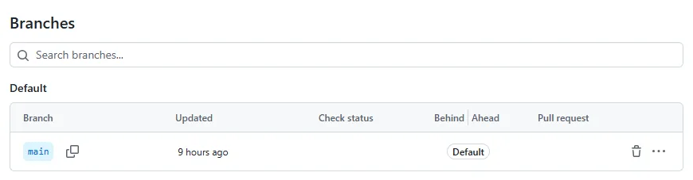

Page 6 of 12 · B. Make your toolkit
Plan and claim your toolkit
Name your toolkit, claim the name on GitHub, then write your idea: this page turns it into the prompt for your AI.
Orange text like <toolkit-id> = replace it with your own. Grey buttons like Copy = something to click.
01Name your toolkit
Your initials and a short name make your toolkit id.
Name your toolkit
Your initials and a short name make your toolkit id.
Your initials + toolkit name = your toolkit id
The course's naming rule: toolkit id = <initials>-<toolkit-name>, lowercase, words joined with -. Initials HK and toolkit Small library give hk-small-library. Type both: every command and prompt on these pages fills in your id.
- Toolkit id
<toolkit-id>- Folder
toolkits/<toolkit-id>/- Branch
toolkit/<toolkit-id>
Already pushed a branch with a different id?
Lowercase letters, digits,- or _, starting with a letter. Keep using it: never rename a toolkit. Leave this empty to use the id built above.
Remembered only in this browser, for this address: a page opened by double-click and the same page online each keep their own. Without JavaScript, replace <toolkit-id> in the commands yourself.
Why initials? Can I change it later?
Initials keep ids unique in the class. Ids are forever: your designs and projects store the id, so a renamed toolkit loses them. Choose it once.
What will my toolkit folder contain? (optional)
Your AI writes these files. A complete example is toolkits/house/ (read it, never change it).
02Check the name is free
Nobody else in the class may use the same id.
Check the name is free
Nobody else in the class may use the same id.
Open the course's branches on GitHub and type your initials in Search branches….

- No
toolkit/<toolkit-id>listed: the name is free. Claim it now (step 03). - Listed and not yours: add a word to your toolkit name (e.g. Small library → Small village library), above.
It is listed and it is mine
You claimed it earlier: skip step 03 and go to your branch with git switch toolkit/<toolkit-id> (without -c). On a new laptop git finds it on GitHub by itself.
03Claim it on GitHub
Make your branch and push it at once, before any AI work: then the name is yours.
Claim it on GitHub
Make your branch and push it at once, before any AI work: then the name is yours.
In VS Code's terminal, in the course folder (Set up › 10). Is npm install still running there? Open a second terminal with +. One command at a time:
- Check where you are
git status
On branch mainas the first line: go on.It says “On branch” something else
Go back to the course version first, so that your new branch starts from it:
git switch main
It says “not a git repository”? The terminal is in the wrong folder: Help.
- Get the newest course version
git pull
“Already up to date.” or a list of updated files.
- Make your branch and go to it
git switch -c toolkit/<toolkit-id>
Switched to a new branch 'toolkit/<toolkit-id>'.git switchmoves you to a branch;-cmeans “create it first”. Without-cyou go to a branch that already exists (Git basics › git switch -c). - Make the claim commitAn empty snapshot that marks the branch as yours.
git commit --allow-empty -m "chore(<toolkit-id>): claim the toolkit name"
[toolkit/<toolkit-id> …] chore(…): claim the toolkit name. - Push it to GitHub
-uremembers GitHub as the place this branch goes, so later you only typegit push(more).git push -u origin toolkit/<toolkit-id>
* [new branch] toolkit/<toolkit-id> -> toolkit/<toolkit-id>. The name is yours.The first push asks you to sign in to GitHub: how.
“rejected” or “Everything up-to-date” instead? Not your fault: someone already has this name. Never pull it. Choose another name above, then repeat steps 3–5 with the new name.
Using GitHub Desktop instead?
GitHub Desktop cannot make an empty commit. Make the branch in Desktop (Current branch › New branch, name toolkit/<toolkit-id>), then run steps 4 and 5 above in VS Code's terminal.
Something else went wrong?
- “A branch named … already exists”
- “Please tell me who you are”
- “Permission denied” / 403 (invitation not accepted yet: claim again once it is)
- “Need to specify how to reconcile divergent branches” on
git pull
the push printed * [new branch], and your branch is listed on the branches page.
04Who will write it: an agent or a chat?
Both end the same way: your folder, checked, pushed.
Who will write it: an agent or a chat?
Both end the same way: your folder, checked, pushed.
A coding agent or a chat assistant?
Coding agent
Codex, Claude Code, GitHub Copilot in Agent mode (Copilot Free costs nothing)
- Where: inside VS Code, in your copy of the course folder.
- What it does: reads the files, writes your toolkit folder and runs the checks.
- You: describe, review what it changed, try it, push.
- Choose it when you have one: page 7.
Chat assistant
Any AI chat in the browser that accepts a zip file, such as claude.ai, chatgpt.com or gemini.google.com
- Where: a website, outside your files.
- What it does: reads the kit you attach and gives your folder back as a zip.
- You: put the folder in place, run the checks, commit, push.
- Choose it when you have no coding agent, or it is out of quota: page 8.
05Write your plan
In plain words; the prompt below fills itself in.
Write your plan
In plain words; the prompt below fills itself in.
Remembered in this browser only.
06Your prompt
Copy the one for your way of working.
Your prompt
Copy the one for your way of working.
Coding agent
Read lab/docs/TOOLKITS.md and lab/docs/ai-kit/toolkit/PROMPT.md in this repository, then create my toolkit following them exactly. Work only inside toolkits/<toolkit-id>/ on my branch toolkit/<toolkit-id>, run the checks, and commit only my folder. Do not push: I will push. Toolkit id: ___ My idea: ___ Functions (and their attributes): ___ Algorithms: ___ Example design: ___
Chat assistant
I've attached the Spatial Graph Lab toolkit kit. Read PROMPT.md and every file in it, then write my toolkit following it exactly. Give me the folder <toolkit-id>/ as a zip; if you cannot make files, give every file in its own code block, headed by its path. Toolkit id: ___ My idea: ___ Functions (and their attributes): ___ Algorithms: ___ Example design: ___
Lines still showing orange ___ are empty: fill them in above. Next: page 7 (agent) or page 8 (chat).